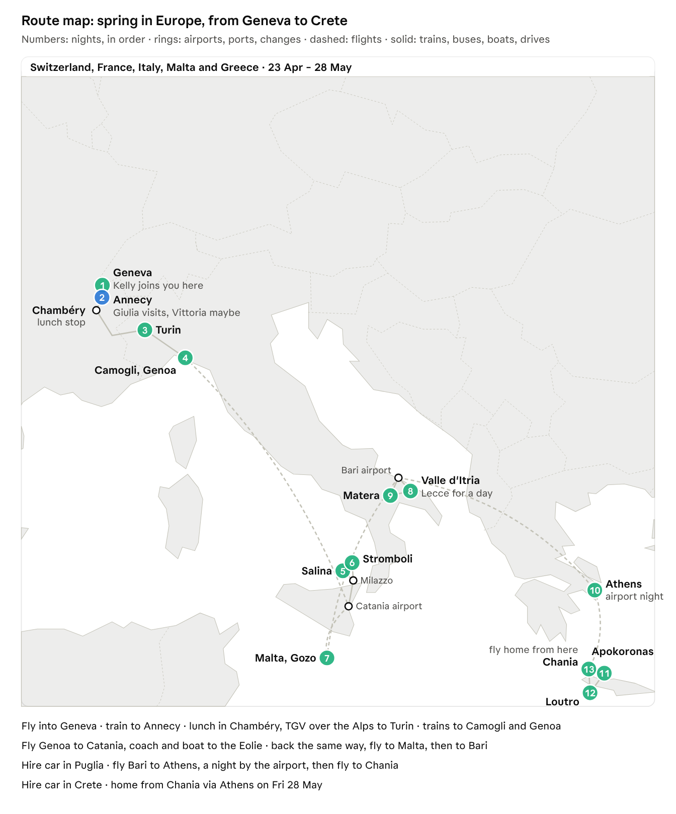
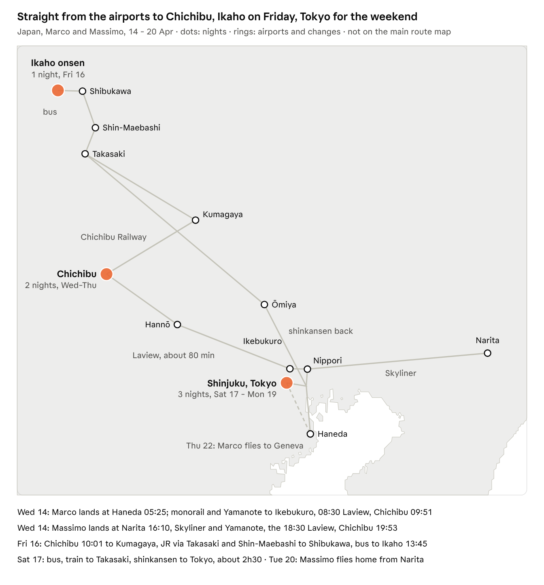
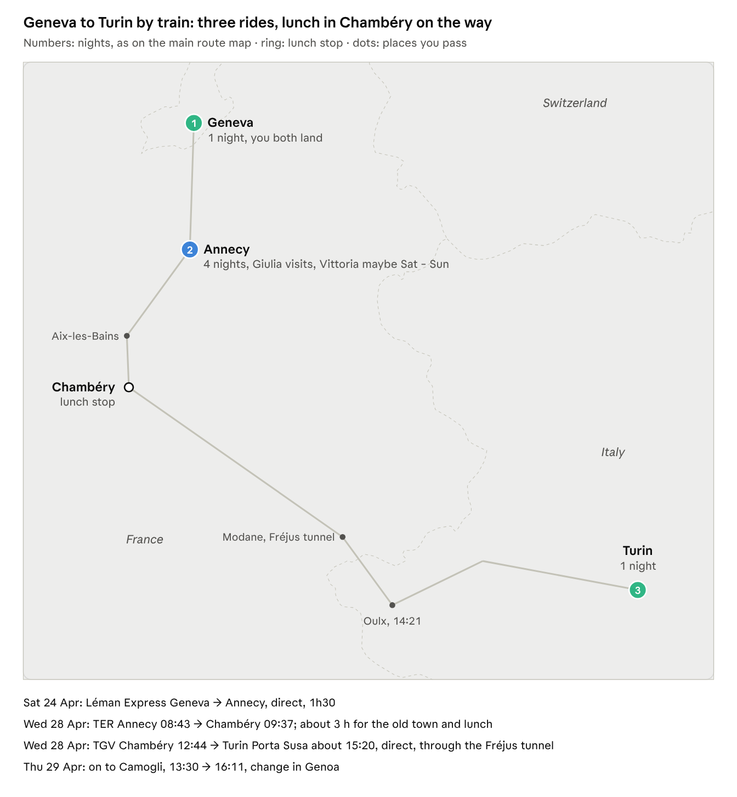
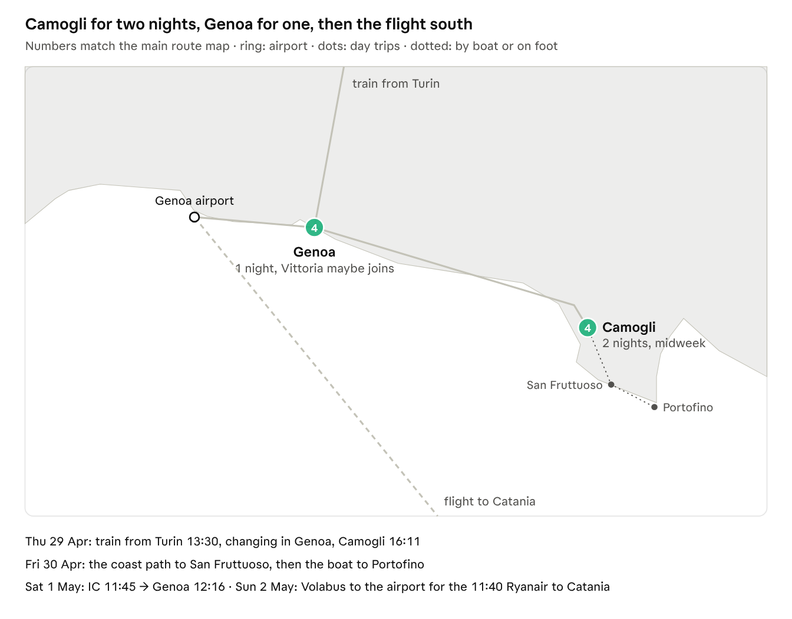
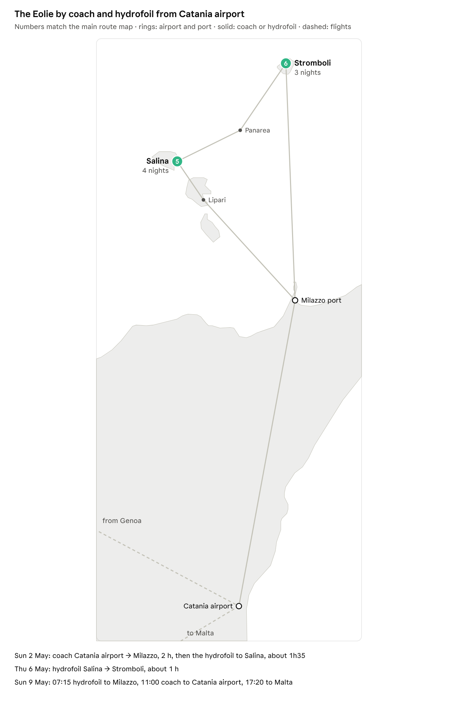
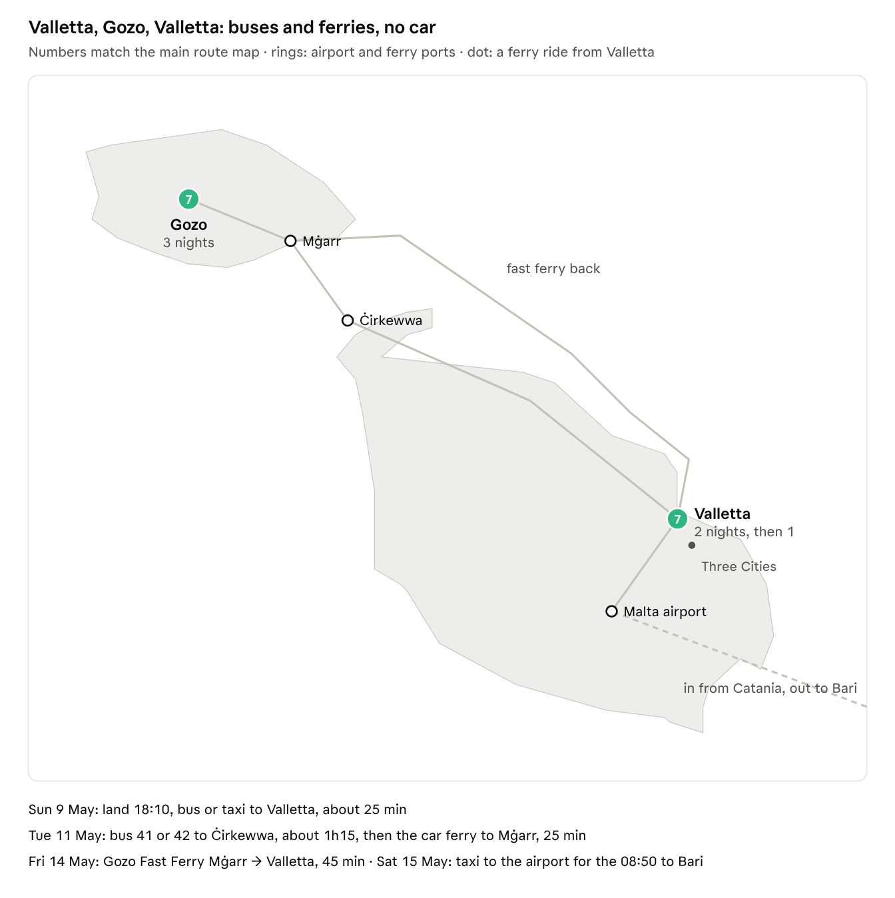
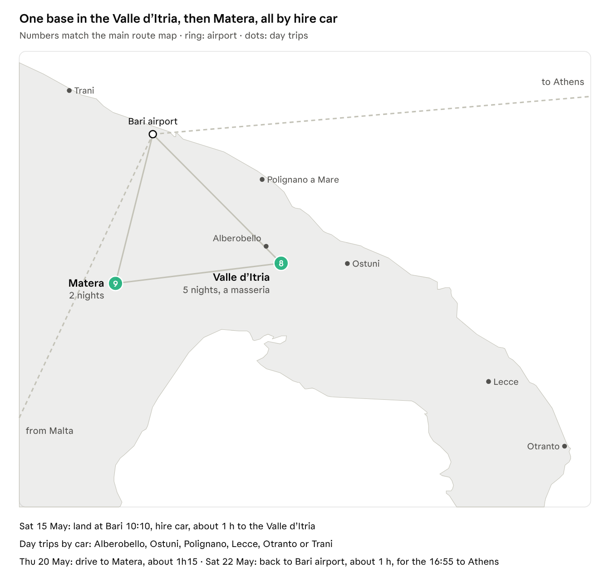
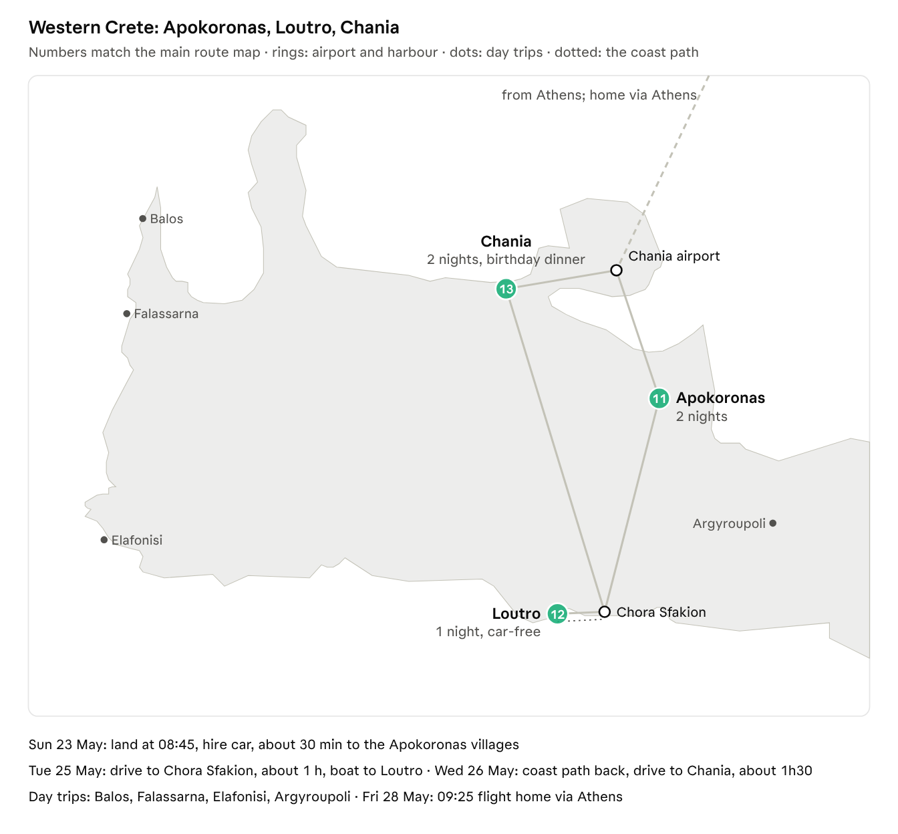

Jump to: Tokyo · Geneva · Annecy and Chambéry · Turin and Liguria · Eolie · Malta · Puglia · Crete · What to book · To discuss with Kelly
Route map
Spring starts with seven nights in Japan and Geneva (two nights for Marco, one for Kelly), then runs north to south and back: Annecy, Turin, the Riviera, the Eolie, Malta and Gozo, Puglia and Crete, flying home from Chania. The late-summer trip is Tahoe and the Dolomites.

Detail maps
Japan: Chichibu, Ikaho and Tokyo

Geneva, Annecy, Chambéry, Turin

Genoa and Camogli

Catania airport, Milazzo and the Eolie

Malta and Gozo

Puglia: Bari, the Valle d’Itria, Matera

Western Crete: Chania, Apokoronas, Loutro

Timeline
Marco flies out on Tue 13 Apr after work and reaches Geneva at 13:15 on Thu 22 Apr; Kelly leaves Sydney on Wed 21 Apr, stops over in Doha and lands on Friday morning. You both leave Chania on Fri 28 May: Kelly at 09:25 and Marco at 12:55, both landing in Sydney on Sat 29 May (Kelly 17:05, Marco 22:05). Marco's leave runs Wed 14 Apr to Fri 28 May, 32 working days, and you're back at work on Mon 31 May.
The plan at a glance
Thirty-two days of leave buy seven nights in Japan and a month in Europe, Wed 14 Apr to Fri 28 May 2027. Nothing is fixed yet, so the dates follow the local calendar: each leg sits between the school holidays, long weekends and festivals that would fill it (see Fixed dates and assumptions). Japan comes first, seven nights with Massimo, who gets there a night ahead, then Geneva, where you land on Thursday at lunchtime and Kelly joins you on Friday morning. From there the route runs north to south and back: Annecy, Turin, the Riviera, the Eolie, Malta, Puglia and Crete as a couple, flying home from Chania on Fri 28 May. It's also your first long trip together, so it has time apart built in and flexible bookings for the second half.
- Japan, 14 – 21 Apr. Marco flies out on Tue 13 Apr after work and lands on Wednesday; Massimo, coming from Korea, is already in Chichibu from Tuesday evening. Seven nights together, countryside first: two nights in Chichibu, two in the Ikaho onsen, then Tokyo from Sunday, and a last day in Tokyo together on Wednesday (Massimo stays a night more and flies home from Narita on Thursday afternoon); you fly out just after midnight on Wednesday night (00:05 Thu).
- Geneva, 22 – 24 Apr. You fly from Tokyo just after midnight on Thu 22 Apr via Dubai, landing at 13:15; Kelly leaves Sydney on Wed 21 Apr, stops over in Doha and lands on Friday morning. Two nights for you, one for Kelly.
- Annecy, 24 – 28 Apr. Train from Geneva on Saturday for four nights, from the last weekend of the local school holidays to well before Ascension; Giulia comes down from Paris when it suits her, and Vittoria may join for the weekend (optional).
- Chambéry, Wed 28 Apr. A stop on the way, not a night: the 08:43 train from Annecy (09:37 in Chambéry), about three hours for the old town and lunch, then the 12:44 TGV, direct to Turin Porta Susa at about 15:20.
- Turin, Camogli and Genoa, 28 Apr – 2 May. A night in Turin, two quiet midweek nights in Camogli, then a night in Genoa on Sat 1 May (May Day) for the Sunday flight; gone before Ascension and the fish festival on 8 – 9 May. Vittoria may join in Genoa on Saturday (optional).
- Eolie, 2 – 9 May. Fly Genoa to Catania on Sunday; Salina for four nights, then Stromboli for three.
- Malta and Gozo, 9 – 15 May. Fly Catania to Malta on Sunday afternoon; two nights in Valletta, three on Gozo, then a last night in Valletta for the morning flight, where the family may have its roots.
- Puglia, 15 – 22 May. Fly Malta to Bari on Saturday; a masseria in the Valle d'Itria for the weekend, with Lecce as a day out, then Matera.
- Crete, 23 – 28 May. Via Athens to Chania; Apokoronas villages, then Loutro on the car-free south coast. On Fri 28 May Kelly flies home in the morning via Athens, landing Sat 29 May; Marco flies at 12:55 via Athens and Dubai, landing Sat 29 May at 22:05.
Giulia can take leave, so her visit to Annecy isn't tied to a holiday weekend; Annecy is about 3h45 from Paris by TGV.
Late-summer trip, 20 Aug – 7 Sep
Kelly's house at Lake Tahoe in high summer, then the Dolomites while the huts are open: a shorter second trip of 12 working days, to decide on after the spring trip.
- California, 20 – 28 Aug. Kelly's house at Lake Tahoe, then San Francisco.
- Dolomites, 29 Aug – 5 Sep. Val di Funes, below the Alpe di Siusi, Val Badia; fly home from Venice on Sun 5 Sep, landing Tue 7 Sep.
Leave: 32 days in spring, plus 12 if the late-summer trip goes ahead
| Trip | Away | Leave dates | Working days of leave | Public holidays inside |
|---|---|---|---|---|
| Spring trip | Tue 13 Apr (night flight) – Sat 29 May | Wed 14 Apr – Fri 28 May | 32, long service | Mon 26 Apr, the extra Anzac Day holiday in NSW, so it costs no leave |
| Late-summer trip, if it goes ahead | Fri 20 Aug (night flight) – Tue 7 Sep | Mon 23 Aug – Tue 7 Sep | 12, long service | None |
| Total | 32, or 44 with late summer |
Balances you gave, with no leave taken: 43.72 days of long service and 13.87 annual by 1 Feb 2027; 46.31 long service and 25.56 annual by 1 Sep 2027. The 32 spring days fit within the February balance. If the late-summer trip goes ahead, its 12 days take the total to 44, still within the long service balance in September. Both trips fly out on an evening after work, so the flight out costs no leave.
Why these places
Every stop is there for one of three reasons: it was on your list, it's in its best season on these dates, or it gives the off-the-beaten-track version of a place instead of the headline one.
| Destination | Where you stay or go | Why these |
|---|---|---|
| Japan | Tokyo | On your original list, added back at your request: seven nights for Marco and Massimo. Mid-April is about 12 – 21 °C, after the cherry blossom and well before Golden Week. |
| France | Geneva for a night, Annecy, lunch in Chambéry | Annecy on your list: the lake, the old town and the mountains above it, and an easy train for Giulia from Paris. You arrive as the local schools go back and leave before the Ascension long weekend. Geneva is where the flights land; Chambéry, the old Savoy capital, is a lunch stop on the way to Italy. Paris was dropped. The train under the Alps to Italy avoids one-way car-hire fees. |
| Italy: Turin and Liguria | Turin, Camogli, Portofino, San Fruttuoso, Genoa | Not on your list. Turin breaks the journey from Annecy to the coast: elegant, quieter than Milan, with the arcades, the cafés and the Egyptian Museum. Then coastal walking at about 18 – 21 °C, before the beach season and before Camogli's fish festival, different from your May 2026 Cinque Terre trip. |
| Italy: Eolie | Salina, Stromboli | On your list. Early May is about 20 – 22 °C and quiet, with a cool sea of about 18 °C; Salina is the quiet green one. The Ascension crowds from France, Germany and Switzerland rarely come this far. |
| Malta and Gozo | A night in Valletta, then Gozo (a farmhouse in Għarb or Xagħra, or Xlendi cove) | Added at your request: possible Bordieri family roots. Mid-May is about 23 – 26 °C with the sea around 19 – 20 °C, before the June festa season and the 7 June national holiday. |
| Italy: Puglia | The Valle d'Itria (Cisternino or Locorotondo), Lecce for a day, Matera | On your list. Mid-May is about 20 – 24 °C, before the heat and the summer crowds; the Pentecost weekend goes to the countryside and Matera comes at the end of the week. |
| Greece: Crete | West Crete and its south coast | Crete on your list. Late May is about 25 – 27 °C with the sea around 21 °C, after Greek Easter and before English half-term; villages and the car-free south coast instead of the resort strip. The Cyclades were dropped. |
| Dolomites (late-summer trip, if it goes ahead) | Val di Funes, Val Gardena hamlets, Alpe di Siusi, Val Badia | On your list, but closed for walking from February to May. Late August and early September have the huts open and settled weather, as the August crowds thin. Lago di Braies and Seceda skipped. |
| USA (late-summer trip, if it goes ahead) | Lake Tahoe (Kelly's house), San Francisco | Kelly's house is at Tahoe. Late August is high summer at the lake, warm enough to swim, after California's schools have gone back and before Labor Day; San Francisco is the jump-off for Europe. Wildfire smoke is the risk at this time of year. |
Fixed dates and assumptions
Nothing is fixed yet, so the dates follow the local calendar: each leg sits between the school holidays, long weekends and festivals that would fill it. These are the ones the plan steers round.
| Dates (2027) | What | How the plan avoids it |
|---|---|---|
| 10 – 26 Apr | French school holidays in Annecy's zone | You arrive in Annecy on Sat 24 Apr, the last weekend, after a night in Geneva |
| 13 – 18 Apr | Milan Design Week | Milan isn't in the plan |
| 27 Apr – 16 May | Rome tennis Open | Rome isn't in the plan for now |
| 29 Apr – 5 May | Golden Week in Japan | Marco leaves Japan at 00:05 on Thu 22 Apr (Wednesday night) |
| 30 Apr – 3 May | Greek Orthodox Easter (Sun 2 May) | Crete comes from 23 May |
| Sat 1 – Sun 2 May | May Day weekend in Italy | Camogli midweek just before it; on the Saturday you're in Genoa, a city that absorbs the holiday crowds |
| 6 – 9 May | Ascension long weekend in France, Germany, Switzerland and Austria | You're in the Eolie, which these visitors rarely reach |
| 8 – 9 May | Camogli fish festival; Venice Architecture Biennale opens; the Giro starts | You leave Camogli on 1 May |
| 13 – 17 May | Turin Book Fair | Turin is on 28 Apr |
| 15 – 29 May | Pentecost, then Bavarian and Baden-Württemberg school holidays | Puglia and Crete, where they matter least; Liguria and the lakes are avoided then |
| Sat 29 May – Wed 2 Jun | Republic Day bridge; Giro finale in Rome on Sun 30 May (2027 route published 3 Nov 2026: Trieste 8 May to Rome 30 May, no stages in Liguria, Sicily or Puglia; Monza – Milan time trial on 23 May, before you get there) | You fly home from Crete on Fri 28 May, the day before |
| 31 May – 4 Jun | English school half-term | You're home by then |
| Mon 7 Jun | Malta's national holiday, then the festa season | You leave Malta on 15 May |
| about 8 – 10 Jun | Italian schools finish and the beach season starts | You fly home on 28 May |
| 13 – 19 Jun | Annecy animation festival | Long gone |
| Mid-Sep | Most Dolomites huts close around 20 Sep | Late-summer trip, if it goes ahead |
Assumptions, flag any that are wrong:
- Leave counts in working days. Marco flies out on Tue 13 Apr after work; Wed 14 Apr to Fri 28 May is 32 working days, with Mon 26 Apr a NSW public holiday (the extra Anzac Day holiday). Marco flies home from Chania at 12:55 on Fri 28 May, lands in Sydney at 22:05 Sat 29 May, back at work Mon 31 May.
- Kelly joins you in Geneva on Fri 23 Apr and stays to the end, flying home from Chania the same day as you (her flight at 09:25, yours at 12:55); the second half is booked on refundable or changeable terms so it can shrink or stretch.
- Kelly would rather avoid long taxi runs; driving yourselves in a hire car is fine. Trains, hydrofoils or flights cover the long hops.
- Passports: Marco Italian and Australian, Kelly Australian and US. Marco travels in Europe on his Italian passport, so the EU's coming ETIAS authorisation doesn't apply to him; Kelly will need it on either of her passports once it starts, and there's no start date yet, with reporting pointing to sometime in 2027.
- Comfortable, characterful mid-range places to stay: guesthouses, agriturismi, masserie. No chains or resorts.
Spring: Japan, Geneva, Annecy, Turin and Liguria, the Eolie, Malta, Puglia and Crete (14 Apr – 28 May)
Marco flies to Tokyo on Tue 13 Apr for seven nights with Massimo, who arrives from Korea the evening before. Just after midnight on Thu 22 Apr you fly to Geneva via Dubai, landing at 13:15, and Kelly, who left Sydney on Wed 21 Apr and stopped over in Doha, lands on Friday morning; then by train to Annecy on Sat 24 Apr. Four nights in Annecy, where Giulia can come down from Paris, and lunch in Chambéry on the way, then Marco and Kelly have Turin, the Riviera, the Eolie, Malta and Gozo, Puglia and Crete. On Fri 28 May, the day after your birthday dinner in Chania, Kelly flies home via Athens in the morning, landing in Sydney on Sat 29 May; Marco flies at 12:55 via Athens and Dubai, landing on Sat 29 May at 22:05.
Transfers at a glance
Every move between places, in order. Flight and boat times with a clock time come from a timetable; the rest are estimates of the journey itself, to recheck once the 2027 timetables are out.
| Date | From → to | How | Time |
|---|---|---|---|
| Tue 13 Apr | Sydney → Tokyo (Marco) | Qantas nonstop to Haneda, 20:30 → 05:25 Wed | about 9h55 |
| Wed 21 Apr | Sydney → Doha → Geneva (Kelly) | Booked: QR8408 Sydney 20:55 → Doha 04:45 Thu; stopover; QR101 Doha 02:05 → Geneva 07:35 Fri | 21h20 flying, plus 21h20 in Doha |
| Wed 21 Apr | Shinjuku → Haneda (Marco) | Train | about 1 h |
| Thu 22 Apr | Tokyo → Geneva (Marco) | Booked: Emirates EK313 Haneda 00:05 → Dubai 06:25, EK89 Dubai 08:30 → Geneva 13:15 | 20h10 |
| Sat 24 Apr | Geneva → Annecy | Léman Express, direct | about 1h20 |
| Wed 28 Apr | Annecy → Chambéry → Turin | Regional train 08:43 → 09:37, lunch in Chambéry, then TGV 12:44 → Turin Porta Susa about 15:20 (direct) | about 6h40 with lunch |
| Thu 29 Apr | Turin → Camogli | Regional train and IC 669, change in Genoa, 13:30 → 16:11 | about 2h40 |
| Sat 1 May | Camogli → Genoa | IC 11:45 → 12:16, or a local train; May Day timetable | about 30 min |
| Sun 2 May | Genoa → Genoa airport | Volabus from the centre, about 10:00 | about 25 min |
| Sun 2 May | Genoa → Catania | Ryanair direct 11:40 → 13:25 (fallback: ITA via Rome 07:00 → 10:55) | 1h45 |
| Sun 2 May | Catania airport → Milazzo | Giuntabus coach, 13:45 if the bags are quick, otherwise 15:30 | about 2 h |
| Sun 2 May | Milazzo → Salina | Hydrofoil, evening (17:15 and 18:15 in the current autumn timetable; 2027 times due at the end of 2026) | about 1h35 |
| Thu 6 May | Salina → Stromboli | Hydrofoil | about 1 h – 1h15 |
| Sun 9 May | Stromboli → Milazzo | Hydrofoil with stops | about 2h30 – 3 h |
| Sun 9 May | Milazzo → Catania airport | Giuntabus coach | about 2 h |
| Sun 9 May | Catania → Malta | Ryanair FR368, 17:20 → 18:10 | 50 min |
| Sun 9 May | Malta airport → Valletta | Taxi | about 20 min |
| Tue 11 May | Valletta → Gozo | Taxi to Ċirkewwa (about 45 min), ferry (25 min), short drive on Gozo | about 1h30 |
| Fri 14 May | Gozo → Valletta | Ferry (25 min), then taxi (about 45 min); Sat 15 May: Valletta → airport by taxi, about 20 min | about 1h30 |
| Sat 15 May | Malta → Bari | Ryanair, 08:50 → 10:10 (Saturday's only flight) | 1h20 |
| Sat 15 May | Bari airport → Valle d'Itria | Hire car | about 1 h |
| 16 – 19 May | Day trips from the Valle d'Itria | Hire car | Lecce about 1 h, Trani about 1h20, Polignano about 35 min, each way |
| Thu 20 May | Valle d'Itria → Matera | Hire car | about 1h15 |
| Sat 22 May | Matera → Bari airport | Hire car | about 1 h |
| Sat 22 May | Bari → Athens | Ryanair, 16:55 → 19:25 (Athens is an hour ahead) | 1h30 |
| Sun 23 May | Athens → Chania | Aegean, 07:55 → 08:45, after a night near Athens airport | about 50 min |
| Sun 23 May | Chania airport → Apokoronas | Hire car | about 30 min |
| Tue 25 May | Apokoronas → Loutro | Drive to Chora Sfakion (about 1 h), then boat (20 min) | about 1h30 |
| Wed 26 May | Loutro → Chora Sfakion | Coast path on foot, back to the car, then drive to Chania | about 2 h |
| Fri 28 May | Chania → Chania airport | Hire car | about 25 min |
| Fri 28 May | Chania → Sydney | Kelly: Aegean to Athens, then Qatar via Doha, 09:25 → 17:05 Sat. Marco (booked): Aegean A3339 12:55 → Athens 13:45, Emirates EK210 18:05 → Dubai 23:35, EK414 02:15 → Sydney 22:05 Sat | Kelly about 24h40, landing Sat 29 May; Marco 26h10, landing Sat 29 May at 22:05 |
The drive from Chora Sfakion to Chania on Wed 26 May is an estimate, about 1h30 on the mountain road.
Japan: Chichibu, Ikaho and Tokyo, 14 – 21 Apr (7 nights)
Marco flies Sydney to Tokyo on the night flight on Tue 13 Apr, after work, and lands on Wed 14 Apr. Massimo comes from Korea on Tue 13 Apr and is in Chichibu that evening, a night ahead. Seven nights together; Massimo flies home from Narita on the afternoon of Thu 22 Apr, and Wed 21 is a last day in Tokyo together before flying to Geneva just after midnight on Thu 22 Apr. Mid-April in Tokyo is about 12 – 21 °C, after the cherry blossom, and Golden Week doesn't start until Thu 29 Apr.
The Massimo days follow Massimo's countryside-first plan: straight from the airports to Chichibu for two nights, so the Hitsujiyama shibazakura is seen on a weekday, then two onsen nights in Ikaho, Friday and Saturday, and three nights in Tokyo from Sunday. Marco lands at Haneda at 05:25 and takes the 08:30 Laview from Ikebukuro, in Chichibu at 09:51. Massimo flies in from Korea on Tue 13 Apr and reaches Chichibu that evening, so his first night there is on his own. You take the big bags with you to Chichibu and Ikaho. Massimo flies home from Narita on Thu 22 Apr, in the afternoon.
| Dates | Who | Base | Nights | What to do |
|---|---|---|---|---|
| Tue 13 – Wed 14 Apr | Massimo | Chichibu | 1 | Arrives from Korea in the evening; Marco lands at Haneda the next morning |
| Wed 14 – Fri 16 Apr | Marco and Massimo | Chichibu | 2 | Marco straight from Haneda on the 08:30 Laview from Ikebukuro (Chichibu 09:51); Massimo is already there. Chichibu Shrine, Buko Shuzo sake brewery next door, Hitsujiyama on Thursday |
| Fri 16 – Sun 18 Apr | Marco and Massimo | Ikaho onsen, Gunma | 2 | Chichibu 10:01, via Kumagaya, Takasaki and Shibukawa, then the bus: Ikaho 13:45, about 3h45. Ryokan with kaiseki, the 365 stone steps to Ikaho Shrine, Mizusawa udon, Lake Haruna. Saturday night is the busier, dearer one at a ryokan: book early |
| Sun 18 Apr | Marco and Massimo | Shinjuku | 1 | Back via the Takasaki shinkansen, about 2h30; Koenji izakaya with a local friend |
| Mon 19 Apr | Marco and Massimo | Shinjuku | 1 | A free day in Tokyo together |
| Tue 20 – Wed 21 Apr | Marco and Massimo | Shinjuku | 1 | Last night together. Wed 21 Apr: check out, a last day in Tokyo (bags in a station locker); Marco at Haneda by about 21:30 for EK313 at 00:05 |
| Wed 21 – Thu 22 Apr | Massimo | Tokyo | 1 | A last night on his own; flies home from Narita on Thursday afternoon |
Geneva, 22 – 24 Apr (Marco 2 nights, Kelly 1)
Thu 22 Apr: Marco flies Tokyo to Geneva on Emirates via Dubai: EK313 Haneda 00:05 (Wednesday night) → Dubai 06:25, then EK89 08:30 → Geneva 13:15 (20h10), in time for the 14:00 Airbnb check-in, so an afternoon and a night in Geneva on his own. It's one Flight Centre ticket with his Qantas flight out and his flight home: booked 19 Nov, A$3,354.95 including the A$59.95 online fee. Emirates Eco Flex: date changes USD 100 (the first free), cancellation USD 200, no-show USD 400, plus Flight Centre's own fees; 30 kg bags on every flight. Kelly left Sydney the night before, Wed 21 Apr at 20:55 (QR8408), landed in Doha at 04:45 Thursday and spends the day there (booked: Wyndham Grand Doha West Bay Beach, through Discover Qatar, with Doha Sands Beach access, 10:00–17:00), then flies QR101 at 02:05, landing in Geneva at 07:35 Friday. It's one Qatar ticket with her flight home, A$2,101.94, booked 18 Nov. Marco meets her at Geneva airport on Friday morning. Staying (booked): Airbnb studio on Rue du Prieuré, between the lake and Cornavin station, 2 nights Thu 22 – Sat 24 Apr for two adults, A$365 charged on 15 Mar 2027, host Larissa. Check-in after 14:00, so message Larissa that Marco arrives about 14:00 on Thursday; checkout by 10:00 on Saturday. Free cancellation until 13:00 on 23 Mar 2027, partial refund until 14:00 on 15 Apr. The host may ask for passport details, as Swiss law requires. Cheaper or Gulf-free alternatives are in the flight sheet. Sat 24 Apr: the Léman Express to Annecy, direct, about 1h20. It's the last weekend of the French school holidays, so expect families heading home; from Monday it's quiet.
Annecy, with Giulia and maybe Vittoria, 24 – 28 Apr (4 nights), then lunch in Chambéry
| Day | Where | What |
|---|---|---|
| Sat 24 | Annecy | Léman Express from Geneva, direct, about 1h20; the old town's canals in the evening |
| Sun 25 | Annecy | The lake path by bike to Talloires |
| Mon 26 | Annecy | The walk up Mont Veyrier above the lake (2 – 3 h); the Semnoz may still have snow near the top |
| Tue 27 | Annecy | A boat across the lake and lunch in a lakeside village |
| Wed 28 | Chambéry, then Turin | Train 08:43 → 09:37; about three hours for the old town, the château of the Dukes of Savoy, the Fontaine des Éléphants and lunch, all within 10 min of the station; then the TGV 12:44, direct to Turin Porta Susa about 15:20 |
Giulia can take leave, so she can come down from Paris by TGV (about 3h45) on whichever days suit her. Late April in Annecy is about 14 – 18 °C with showers likely, and the lake is too cold to swim. You arrive on Sat 24 Apr, the last weekend of the local school holidays, so the first two days are busier, and leave well before the Ascension long weekend (6 – 9 May), when the town fills.
Vittoria, optional, Sat 24 – Sun 25 Apr. Lombardy schools have no break then (Easter is 25 – 30 Mar; 25 Apr is a Sunday), so only the weekend, and only if her school has no Saturday lessons. Out: Monza 07:27, change in Milan for the EC 40 to Geneva (12:31), where you meet her and take the Léman Express together to Annecy, 14:16; about 6h50, €42.50. Back on Sun 25: Annecy 14:44 via Geneva, Monza 22:31; about 7h50, €30.50 (Trenitalia, 16 Nov). A long trip for one night.
Direct high-speed trains from Chambéry through Turin to Milan resumed in April 2025, after a 2023 landslide closed the line; Trenitalia runs four a day (Railin). Going by train avoids the large fee for dropping a French hire car in Italy.
Turin, Camogli and Genoa, Marco and Kelly, 28 Apr – 2 May (4 nights)
Wed 28 Apr: the TGV from Chambéry reaches Turin Porta Susa at about 15:20, in time for an evening in the centre. Thu 29 Apr: a morning in Turin, then the 13:30 train to Camogli, changing in Genoa, arriving 16:11 (€23.15). Two quiet midweek nights there, then on Sat 1 May, May Day, the short train to Genoa (IC 11:45 → 12:16) and a night there for the Sunday flight; Genoa is a city, so it absorbs the holiday crowds. Early May on the Riviera is about 18 – 21 °C, green and in flower, well before the beach season. This stretch of coast is different from the Cinque Terre you saw in May 2026.
Vittoria, optional, Sat 1 May. May Day is a holiday for her, and Genoa is the easy place to meet. Out: Monza 08:27, Genova Principe 10:44; about 2h15, €21.50 (Trenitalia, 16 Nov). You arrive from Camogli at 12:16, so lunch and the afternoon together in the old town; she goes back the same evening or stays the night and travels home on Sunday while you fly.
| Dates | Base | Nights | What to do |
|---|---|---|---|
| 28 – 29 Apr | Turin | 1 | The arcades of Via Po and Piazza San Carlo, a bicerin at Caffè Al Bicerin, the Egyptian Museum, and the lift up the Mole Antonelliana for the Alps at sunset. Thu 29 Apr: the 13:30 train to Camogli, about 2h40 |
| 29 Apr – 1 May | Camogli | 2 | The harbour and the focaccia di Recco on arrival. Friday: the promontory path to San Fruttuoso abbey (2 – 3 h), early, before the day-trippers, and the boat on to Portofino, then back by boat or bus for sunset on the waterfront. Sat 1 May: train to Genoa, about 30 min |
| 1 – 2 May | Genoa | 1 | The old town's alleys, the port and the Spianata Castelletto lookout; May Day is a holiday, so check which museums open. Sun 2 May: the Volabus to the airport, about 25 min, for the 11:40 Ryanair |
Eolie, Marco and Kelly, 2 – 9 May (7 nights)
Sun 2 May: fly Genoa to Catania on the Ryanair direct, 11:40 → 13:25 (A$156). Then the Giuntabus coach from the airport to Milazzo port (€13 each, luggage included, about 2 h): the 13:45 if the bags come out quickly, otherwise the 15:30, arriving about 17:30, for an evening hydrofoil to Salina (about 1h35; the current autumn timetable has Milazzo departures at 17:15 and 18:15). If the 2027 timetable has no Salina boat after 17:30, switch to ITA via Rome 07:00 → 10:55 (A$129) and the 12:30 coach. Giuntabus confirmed by email on 4 Nov that from April to May 2027 there are eight coaches a day each way: from the airport at 10:00, 11:00, 12:30, 13:45, 15:30, 16:30, 17:30 and 19:00 (the last), and from Milazzo at 07:00, 08:30, 09:50, 11:00, 12:40, 13:45, 14:30 and 15:45 (the last). They say the summer times can still change, so check giuntabus.com closer to the date. The 2027 hydrofoil timetable is published at the end of 2026, per Liberty Lines. Early May is about 20 – 22 °C with the sea around 18 °C, cool for swimming, and the islands are quiet before the June season.
| Dates | Base | Nights | What to do |
|---|---|---|---|
| 2 – 6 May | Salina | 4 | Monte Fossa delle Felci (962 m, about 3 h up), Pollara, capers and Malvasia, granita and pane cunzato in Lingua; with four nights, a hydrofoil day to Lipari or Vulcano |
| 6 – 9 May | Stromboli | 3 | Sunset walk to the 400 m viewpoint with an authorised guide (about 5 h); the summit is closed to visitors. Boat to Ginostra. Sun 9 May: early hydrofoil to Milazzo (about 2½ – 3 h with stops), the 11:00 or 12:40 coach to Catania airport, and the 17:20 flight to Malta |
Malta and Gozo, Marco and Kelly, 9 – 15 May (6 nights)
Sun 9 May: fly Catania to Malta (Ryanair FR368, 17:20 → 18:10, A$31 each on 13 Nov; also 07:20 and 14:55). Mid-May is about 23 – 26 °C with the sea around 19 – 20 °C, before the June festa season and the 7 June national holiday. English is spoken everywhere.
| Dates | Base | Nights | What to do |
|---|---|---|---|
| 9 – 11 May | Valletta | 2 | Land in the evening; Valletta's walled baroque streets at night. Next day: the Upper Barrakka Gardens, St John's Co-Cathedral and the ferry across the harbour to the Three Cities |
| 11 – 14 May | Gozo (a farmhouse in Għarb or Xagħra, or Xlendi cove) | 3 | Bus or taxi to Ċirkewwa and the 25-minute ferry to Mgħarr. The Citadel in Victoria, Ramla Bay's red sand, the cliff walks; the coast path from Marsalforn past the Xwejni salt pans, hand-worked by the same families for generations (buy salt from them; the harvest starts around May), then a swim in Marsalforn bay; a look for Bordieri family traces. Fri 14 May: the ferry back and a taxi to Valletta, about 1h30 |
| 14 – 15 May | Valletta | 1 | A last evening in Valletta. Sat 15 May: 20 min by taxi to the airport for the 08:50 to Bari |
Puglia, Marco and Kelly, 15 – 22 May (7 nights, hire car)
Sat 15 May: fly Malta to Bari (Ryanair, 08:50 → 10:10), pick up the car and drive about an hour to the masseria. Mid-May in Puglia is about 20 – 24 °C, before the heat and the summer crowds. The Pentecost weekend (Sun 16 May brings a few German and Austrian visitors) goes to the countryside, and Matera comes at the end of the week.
| Dates | Base | Nights | What to do |
|---|---|---|---|
| 15 – 20 May | Valle d'Itria (Cisternino or Locorotondo) | 5 | About 1 h from Bari. A masseria stay, with one full day for the white towns, the dry-stone countryside by bike and Cisternino's butcher-grills. A day in Lecce (about 1 h) for the baroque old town and pasticciotto. A coast day: Trani (about 1h20) and its cathedral on the water in the morning, then Polignano on the way back for the evening |
| 20 – 22 May | Matera (Basilicata) | 2 | About 1h15 by car. A cave room in the Sassi, the walk across the ravine in the Murgia park (2 – 3 h), the Sassi lit up at dusk. Sat 22 May: Saturday's Ryanair leaves Bari at 16:55, landing in Athens at 19:25; a night near Athens airport, then Aegean 07:55 → 08:45 to Chania on Sunday (car hire desks at Chania can close at 22:00, so no late arrival). Ryanair's own Bari – Chania and Malta – Chania flights only run from June, or one day a week in May |
Drive-and-wander extras: Cisternino's butcher-grills (pick your meat, they cook it); Locorotondo and Ceglie Messapica for quiet white towns and food; Gravina in Puglia's gorge and Altamura's bread on the Matera day.
Massimo's tips, as a local: he backs the masserie in the Valle d'Itria, and around Bari he suggests Trani, Bari itself and Polignano. Bari's old town fits the arrival day, Sat 15 May, for lunch before the drive to the masseria. Trani and Polignano share one coast day: Trani, with its cathedral on the water, in the morning (about 1h20 from the Valle d'Itria), and Polignano on the way back.
Crete, Marco and Kelly, 23 – 28 May (5 nights, hire car)
Late May in western Crete is about 25 – 27 °C with the sea around 21 °C, after Greek Easter and before English half-term. The Samaria Gorge normally opens in May. You both fly home from here: Chania → Athens connects to most long-haul flights.
| Dates | Base | Nights | What to do |
|---|---|---|---|
| 22 – 23 May | Markopoulo, 15 min from Athens airport (Airbnb, booked) | 1 | Land at 19:25 from Bari, taxi about 15 min. Booked: a room in a villa, A$113.89, free cancellation until 21 May (details in the sheet). Sun 23 May: Aegean 07:55 to Chania, landing 08:45, and pick up the car |
| 23 – 25 May | Apokoronas village (Vamos or Gavalochori) | 2 | Land in Chania at 08:45 and drive about 30 min. Chania's old harbour, White Mountain foothill villages. Drive-and-wander ideas: Argyroupoli (springs, Venetian ruins), Polyrrinia hilltop village, Falassarna beach at sunset; Balos and Elafonisi are beautiful but crowded. Naturist-friendly: Kedrodasos (a short walk from Elafonisi, quieter), the far north end of Falassarna |
| 25 – 26 May | Loutro, south coast | 1 | Car-free village reached by boat; quiet once the day-trip ferries leave. Arrive in the afternoon, the evening there; next morning the coast path to Chora Sfakion (about 2 h) via Sweetwater Beach (naturist-friendly), back to the car, then drive to Chania (about 1h30) |
| 26 – 28 May | Chania | 2 | Two nights back near the airport, with your birthday dinner by the old harbour on Thu 27 May. Fri 28 May: Kelly flies home, Chania to Athens at 09:25, then Qatar via Doha; Marco flies at 12:55 via Athens and Dubai, so you can share the drive to the airport |
The Rome notes are kept in their own doc for whenever they're wanted; the earlier Milan, Modena, Slovenia and Venice days are in this doc's history.
What to book in advance, and when
Everything with a timed slot, a quota or a sale window, flights and beds aside. In order of booking date, each the latest sensible moment worked back from the itinerary. Most of the rest of the trip is turn-up-and-go: regional trains, the Gozo ferry, the Loutro boats, the San Fruttuoso boat.
Spring
| When | What | How |
|---|---|---|
| Early Jan 2027, when sales open (about 4 months out) | Chambéry → Turin TGV INOUI, Wed 28 Apr (12:44) | SNCF; the regional train Annecy → Chambéry needs no booking |
| Jan – Mar | Hire cars: Puglia (Bari, 15 – 22 May) , Crete (Chania, 23 – 28 May), free cancellation | Any broker; full-size boot for two bags |
| Jan – Mar | Geneva, Thu 22 – Sat 24 Apr: BOOKED, Airbnb studio on Rue du Prieuré, A$365 (charged 15 Mar 2027), free cancellation until 23 Mar | Near Cornavin station, for the train to Annecy |
| Early Jan 2027, once the timetable is published (Liberty Lines: end of 2026) | Liberty Lines hydrofoils, 2, 6 and 9 May: check the evening run to Salina on the 2nd (after 17:30) and the first boat out on the 9th, then decide the island order | libertylines.it; the Giuntabus coach is bought on the day or online |
| April | Kelly: ETIAS if it has started by then | europa.eu/etias |
| Mid-April, 2 – 3 weeks before | Stromboli sunset walk to the 400 m viewpoint, any evening 6 – 8 May; May is quiet | An authorised guide (Magmatrek or similar); the summit stays closed |
| Last week of April | Turin, Wed 28 – Thu 29 Apr: Egyptian Museum and the Mole lift, timed entry | Museum and Mole websites |
Late-summer trip, 20 Aug – 7 Sep 2027
Tahoe, San Francisco and the Dolomites; the day-by-day, its flights and its bookings are on their own tab: Late summer
Flights
Priced on Google Flights on 13 Nov 2026: A$ per person including taxes, for the cheapest fare on the flight that fits the plan. Ryanair, Wizz and Scoot fares don't include bags. A dash means economy on a short hop. Most spring legs are still to price on the new dates.
Spring trip
| Leg | Best fit | Times | Economy | Business |
|---|---|---|---|---|
| Sydney → Tokyo, Marco, Tue 13 Apr | Booked: Qantas QF25 nonstop to Haneda, 20:30 → 05:25 Wed, on one Flight Centre ticket with Marco's other two long-haul flights (Emirates Eco Flex, A$3,354.95 for all three including the online fee, 19 Nov) | — | not yet priced | not yet priced |
| Sydney → Geneva, Kelly, Wed 21 Apr | Booked: QR8408, operated by Qatar for Virgin Australia, Sydney 20:55 Wed → Doha 04:45 Thu; stopover; QR101 Doha 02:05 → Geneva 07:35 Fri. One Qatar ticket with the flight home, A$2,101.94, 25 kg bag | — | not yet priced | not yet priced |
| Tokyo → Geneva, Marco, Thu 22 Apr | Booked: Emirates EK313 Haneda 00:05 → Dubai 06:25, EK89 08:30 → Geneva 13:15 Thu, 20h10 (in the Flight Centre ticket) | — | not yet priced | not yet priced |
| Genoa → Catania, Sun 2 May | Ryanair nonstop | Ryanair 11:40 → 13:25 (fallback: ITA via Rome 07:00 → 10:55) | 156 Ryanair + bag; ITA 129, no bag on the Light fare (Google Flights, 16 Nov) | — |
| Catania → Malta, Sun 9 May | Ryanair nonstop | FR368, 17:20 → 18:10 | A$31 each on 13 Nov | — |
| Malta → Bari, Sat 15 May | Ryanair nonstop | 08:50 → 10:10 | A$85 + bag (15 Nov) | — |
| Bari → Athens → Chania, Sat 22 May | Ryanair to Athens, then Aegean or Sky Express on separate tickets; or one through ticket if Aegean or Sky Express sell the Bari leg, or a night in Athens | 16:55 → 19:25; Sun 23 May Aegean 07:55 → 08:45 | A$155 + bag to Athens, A$138 on to Chania (15 Nov) | — |
| Chania → Sydney, Fri 28 May | Kelly: Aegean to Athens, then Qatar via Doha (in her Qatar ticket). Marco (booked): Aegean A3339 12:55 → Athens 13:45, Emirates EK210 18:05 → Dubai 23:35, EK414 02:15 → Sydney 22:05 Sat, 26h10 (in his Flight Centre ticket) | Kelly 09:25 → 17:05 Sat, 24h40; Marco 12:55 → 22:05 Sat, 26h10 | booked | not yet priced |
Priced so far, per person: about 2,100 in economy and 12,200 in business for Sydney → San Francisco → Venice, plus about 130 – 160 for the Genoa → Catania hop. Everything else is still to price.
Where the hidden savings are
- Skip Reno. Pick up a car at San Francisco airport, drive to Tahoe and back (about 3.5 h each way) and return it there before the flight to Venice: no extra flight and no one-way fee.
- Turkish Airlines' round-the-world fare for the late-summer trip. It goes from Australia via North America and Istanbul to Europe, and back via Istanbul and Asia, with free stopovers: the late-summer shape (Sydney → San Francisco, stop, → Istanbul → Venice; Venice → Istanbul → Singapore → Sydney). Australian Frequent Flyer's sample of that shape cost 2,105 in economy and 7,862 in business in 2024. It's sold through agents only and prices may have moved, so get a quote before buying the late-summer legs.
- Mix airlines in business: TAP via Lisbon, San Francisco → Venice, is 3,606 against 5,306 on United.
- Book the bag with the low-cost hops (Ryanair Genoa → Catania, Catania → Malta, Malta → Bari, Bari → Athens); it costs more at the airport.
- Leave buffers on separate tickets. Bags don't transfer between them, so allow at least three hours, or a night, on self-made connections.
Checked and not worth it
- A return starting in Italy to cover both the June flight home and the flight back out: about 3,000, more than two one-ways.
- One round-the-world ticket for both trips: they now run in opposite directions.
- Hidden-city tricks: they put the later legs and checked bags at risk.
When to book
- Now: the spring long-haul as one multi-city ticket each (Sydney → Tokyo or Geneva, Tokyo → Geneva, Chania → Sydney): Marco booked through Flight Centre, Qantas and Emirates, A$3,354.95 (19 Nov); Kelly booked on Qatar, A$2,101.94 with a Doha stopover going out (18 Nov). Both are booked; changeable fares suit a first long trip together. Hold the late-summer flights until after spring.
- Two to four months out: Ryanair, Aegean, the Liberty Lines hydrofoils once the spring timetable is out around February, and the Puglia and Crete hire cars.
- Also early: Annecy, Turin, Camogli, Genoa, Salina, Stromboli, Valletta, Gozo, the Puglia masseria, Matera and Loutro. Book the second half, from Crete on, with free cancellation.
To discuss with Kelly
The three days where the connections are tight, each with the way to loosen it. Everything else in the itinerary has slack built in.
- Sun 2 May, Genoa → Catania → Milazzo → Salina. Three connections in one day. The Ryanair 11:40 lands at 13:25: the 13:45 coach only works if the bags come out fast, so plan on the 15:30, which reaches Milazzo about 17:30. That leaves the evening boats: the current autumn timetable has Salina runs at 17:15 and 18:15, but the 2027 timetable, due from Liberty Lines at the end of 2026, is what counts. If it has no boat after 17:30, book ITA via Rome 07:00 → 10:55 instead (12:30 coach, several afternoon boats); if a late boat is cancelled on the day, the fix is a night in Milazzo, not a later flight.
- Sun 9 May, Stromboli → Milazzo → Catania → Malta. One hydrofoil, one coach, one flight, nothing behind them. The 07:15 boat gives four hours of slack; if the wind cancels it, the 11:50 boat misses every coach that reaches the airport before the 17:20 (no taxi: too expensive), so that flight would be lost. This day decides whether Salina should come last instead of Stromboli.
- Sat 15 May, Valletta → Bari. Saturday's only flight is 08:50; the last night is in Valletta, 20 min from the airport, so it's no longer tight. Sat 22 May: Bari → Athens leaves at 16:55, so a night near Athens airport and the 07:55 to Chania on Sunday.
Open questions
Silvia and Vittoria: Vittoria could join for a weekend in Annecy (24 – 25 Apr, long trip) or for May Day in Genoa (Sat 1 May, about 2h15 from Monza).
Giulia: which days in Annecy (24 – 28 Apr); and would she join the Dolomites in September?
Economy or business on the long legs? Any Qantas, Velocity or Amex points between you, since business on points could beat everything in Flights?
Eolie, once the 2027 hydrofoil timetable is out (Liberty Lines say end of 2026: check libertylines.it in the first week of January): would Stromboli first and Salina last work? Leaving from Salina on Sun 9 May gives a second boat to Milazzo if the 07:15 is cancelled by wind; it only works if the coach on Sun 2 May meets an afternoon hydrofoil that still calls at Stromboli. Asked Liberty Lines by email on 8 Nov 2026 (afternoon run on 4 May, Salina – Stromboli on 7 May, first boat to Milazzo on 9 May); they replied the same day that the 2027 timetables will be published at the end of 2026.